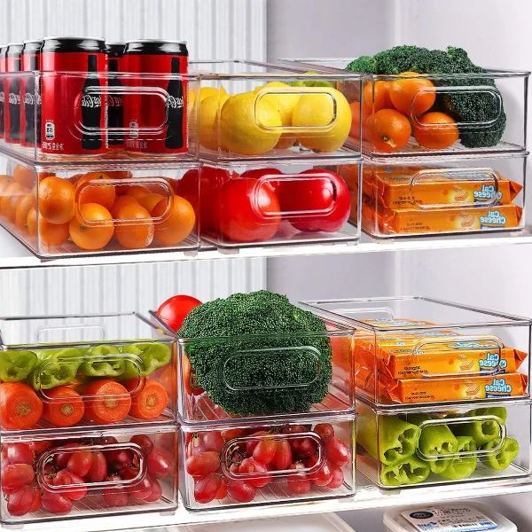
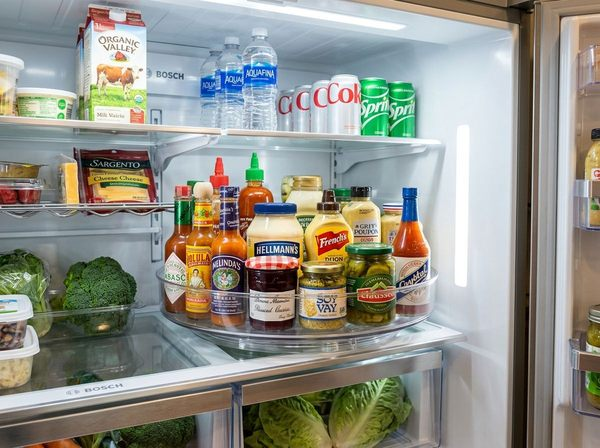
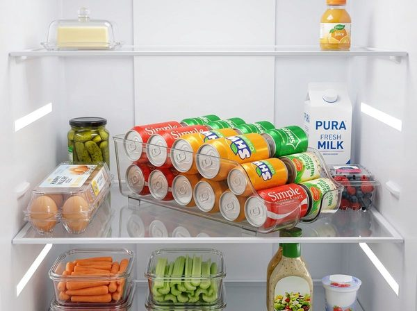

A small refrigerator can have usable space left while still feeling incredibly crowded. You open the door, and even though there are technically empty gaps, you can't easily reach what you need because your food is hidden behind other food.
This is the fundamental problem with small refrigerator organization: we treat the fridge like a storage unit where the goal is maximum capacity, rather than treating it like a workstation where the goal is maximum efficiency.
Refrigerator organization is not primarily about fitting more food inside. It is about making your existing food visible, easy to scan, practical to reach, and easy to return to its consistent location.
Why Small Refrigerators Feel Hard to Organize
When you feel frustrated by a small fridge, it is rarely a true lack of capacity. More often, the frustration stems from three specific failures:
- Poor visibility: You have to move three things just to see what is in the back.
- Poor retrieval: You know where the yogurt is, but reaching it requires unstacking containers.
- Inconsistent placement: Leftovers go wherever there is an empty square inch, meaning you have to hunt for them later.
Organization cannot magically increase your refrigerator's internal dimensions, but it can completely eliminate the daily friction of finding and retrieving your food. Just like applying visibility rules to a deep pantry, optimizing your fridge requires you to stop focusing on space and start focusing on sightlines.
Start With Visibility, Not Containers
Before buying a single plastic bin, you must observe what is currently difficult to see. Open your refrigerator door and take note of the hidden spaces.
Notice the stacked layers of tupperware, the blocked sightlines behind tall juice cartons, and the frequently used items that have been pushed behind larger, rarely used containers. Notice how items on the bottom shelf routinely disappear from view simply because you don't want to bend down to look for them.
The Fridge Visibility Test
The first step in our core system (SEE → GROUP → REACH → RETURN) is the easiest to execute but the most important to maintain.
Open the refrigerator and scan the shelves without moving anything. Ask yourself: Can I quickly see what I actually have?
If you have to shuffle jars to see the mustard, or lift a bowl to see what is underneath it, that area has failed the visibility test. Identify the foods that routinely disappear from view—these are the prime candidates for a structural change.
Group Similar Foods So One Glance Tells You What's There
Once you can see your items, you must group them. However, you should group them by use and category, not by an arbitrary Pinterest aesthetic.
Your categories must reflect your household's actual habits. If you make smoothies every morning, your spinach, yogurt, and flaxseed should be grouped together. Standard categories often include:
- Breakfast foods
- Dairy and cheeses
- Frequently used produce
- Leftovers and meal prep
- Beverages
- Sauces and condiments
Do not prescribe one universal refrigerator layout. If you don't drink milk, you don't need a dedicated dairy zone. Grouping simply ensures that when you need a condiment, your eyes only have to scan one specific area of the fridge.

Stackable Clear Refrigerator Organizer Bins
Solution: These transparent BPA-free acrylic bins create clear pull-out drawers on fridge shelves, making contents instantly visible and easy to restock.
- BPA-free shatter-resistant transparent acrylic
- Stackable design doubles vertical shelf space
- Built-in handles for easy pulling and cleaning
Keep Frequently Used Foods Easy to Reach
Retrieval friction is the silent killer of an organized kitchen. The items you reach for daily must be the easiest to access.
Identify your most frequently used foods—butter, coffee creamer, specific vegetables—and place them in the prime "reach zones" of your refrigerator (usually the middle shelves or the upper door bins). The harder an item is to reach, the less likely you are to use it, and the more likely it is to spoil. Storing everyday items in inaccessible corners guarantees they will be forgotten.

LAMU 360° Rotating Lazy Susan Turntable
Solution: Built with smooth 360-degree steel ball bearings and a raised outer rim, one light spin brings back-corner bottles directly forward without tipping.
- Smooth 360° rotation brings dark back-corner bottles forward
- Raised non-skid outer rim prevents jars from tipping off
- Clear transparent design keeps item labels 100% visible
Avoid Creating Hidden Layers
Placing one item directly in front of another can make your refrigerator look technically organized while rendering it practically useless.
Hidden layers create forgotten leftovers, expired dairy, and unnecessary rearranging every time you need an ingredient. When organizing, pay close attention to deep layers and food hidden behind larger containers. If you find yourself constantly shifting items around just to make a sandwich, you have created a hidden layer problem.

SimpleHouseware 2-Tier Clear Can Dispenser
Solution: Holding up to 12 cans across 2 angled tiers, this gravity-fed rack automatically rolls the next can forward, preventing hidden layers while enforcing the First-In, First-Out rule.
- Holds up to 12 standard cans in a compact 14" depth
- 2-tier gravity-roll design automatically moves upper cans down
- Clear BPA-free shatter-resistant plastic for 100% visibility
Give Everyday Foods a Consistent Home
The final stage is RETURN. Frequently used foods become effortless to manage when they have a predictable, consistent location.
The goal is not rigid perfection where every item must face perfectly forward. The goal is muscle memory. You should know exactly where the milk lives, where the leftovers go, and where the vegetables are stored. When items have a consistent home, returning them takes zero mental effort, which is the secret to maintaining the system long-term.
How to Organize a Small Refrigerator Step by Step
Follow this practical implementation sequence to overhaul your small fridge:
- 01 — SEE: Empty the fridge and identify what routinely disappears from view. Adjust your shelf heights to match your tallest items so you aren't forced to lay things flat.
- 02 — GROUP: Put similar foods together based on how you actually eat and cook.
- 03 — REACH: Prioritize frequently used foods. Place them front and center in the prime reach zones. Utilize turntables or pull-out bins for deep shelves.
- 04 — RETURN: Assign common foods consistent locations so you never have to guess where to put the groceries away.
This sequence creates a system built for daily living, not just for a photograph.
What NOT to Do When Organizing a Small Refrigerator
Many popular organization trends actually make a small refrigerator harder to use. Avoid these common mistakes:
- Don't buy containers before understanding the problem. Identify your specific pain points first.
- Don't force every food category into identical containers. What works for berries might ruin fresh herbs.
- Don't create layers that hide food. If you can't see it, you won't eat it.
- Don't copy another refrigerator's exact layout. Their dietary habits are different from yours.
- Don't organize purely for appearance. Function must always dictate form.
- Don't throw away usable food simply because the refrigerator looks crowded. Reorganize for visibility instead.
The 60-Second Fridge Reset
A beautifully organized refrigerator will still experience entropy. To prevent total chaos, implement a 60-second maintenance routine before you go grocery shopping:
✓ Open the refrigerator.
✓ Find one item you regularly forget.
✓ Improve its visibility (move it forward or put it in a clear bin).
✓ Group similar foods that have drifted apart.
✓ Make frequent items easier to reach.
✓ Return them to their consistent locations.
The Rule: Visibility Before Storage Capacity
Always organize the refrigerator for visibility first, and storage capacity second.
A refrigerator that is packed to the brim but impossible to navigate leads to food waste, frustration, and duplicate grocery purchases. But a refrigerator that is easy to scan, easy to reach into, and easy to reset is infinitely more useful. By prioritizing sightlines and ease of access over sheer volume, you transform your small refrigerator from a cluttered storage box into a functional, efficient workstation.
Are you 18-24 or a Student? Get 6 Months of Prime for $0!
Limited Time Offer (Ends Oct 9): Enjoy fast, free shipping, unlimited streaming, $0 food delivery (Grubhub+), fuel savings (10¢/gal), Prime Reading, unlimited Amazon Photos storage, and exclusive grocery deals. Claim your 6-month free trial of Prime for Young Adults today.
Try Prime for Free →